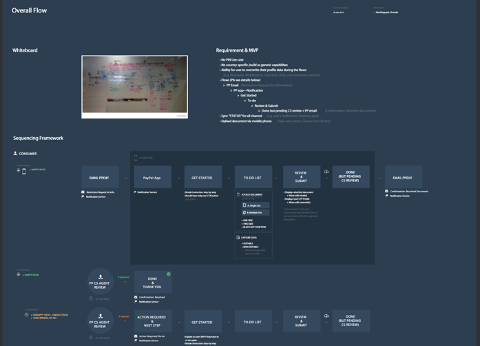
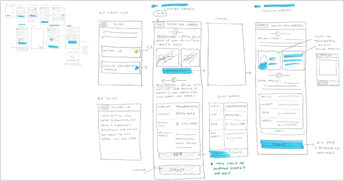
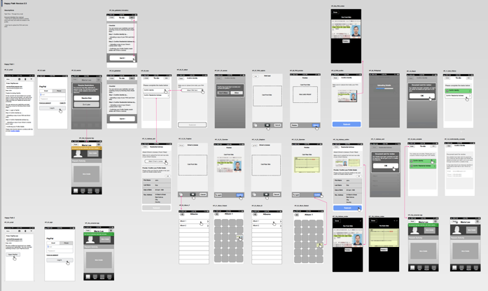
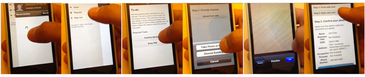

Paypal
Document verification and approval tool for merchants
Duration:
1 month
Type:
Corporate Work
Roles and Responsibilities:
Interaction Designer, Worked along with Design Manager on Design Strategy, UX Design
The Problem
It’s mobile document upload for verification—knowing more about our customer is a key pillar that enables PayPal to operate on a global scale offering safe and convenient solutions for payment. One of the main requirements to operate as a financial institution in various markets is KYC (know-your-customer).
This is typically achieved by a trusted agent (human) verifying a government issued document like a drivers license or passport. Front loading all KYC requirements during signup makes on-boarding new users cumbersome. However not having the appropriate documents in time could result in restrictions placed on the account. Now restrictions are not a huge issue as long as the user can self remediate using simple tools they already own. (such as a smart phone, ID documents etc)
Solution
To improve the customer experience we have to solve this major concern to accelerate the ID verification process with innovative solution, here comes the The Panda Program.
Design Process
The process followed was user-centered and we analysed the KYC behavior of a working individual. Product Strategy was defined based on the client's business strategy and the user's priorities and preferences.
User Goal
Streamline onboarding to make it far more elegant by enabling users to take photos of the identification cards instead of offline process - use this capability to lift compliance and risk restrictions placed on a user's account - make it more convenient for our users.


User Journeys and Wireframes
Once we were done finalizing the product requirements, I created wireframes for the product taking into account a simple task flow for exploring, choosing, paying for and tracking the meal. After a few iterations, we finalized on the wireframes. Visual Design for the screens were done for the app considering the design guidelines and UI patterns.

User Testing Highlights
We wanted to make sure that our designs are tied with solving users pain points. So, we followed iterative testing. We tested our concept with 15 users across 3 days (5 users paer day). The key highlights were
- The concept of leveraging phones to capture data came naturally to users
- Users will be able to use the phone camera to clearly capture documents of variable dimensions
- Get started page will help users discover and comprehend the course required to resolve the account restrictions

After each testing day we would go back and make changes to the designs based on the feedback and inputs. By using this method we were able to correct our assumptions and move forward in the right direction.
My Role
Owning the entire project from Customers Journey, brainstorming and conceptualizing identifying tasks flows, building wire frames. visual design.